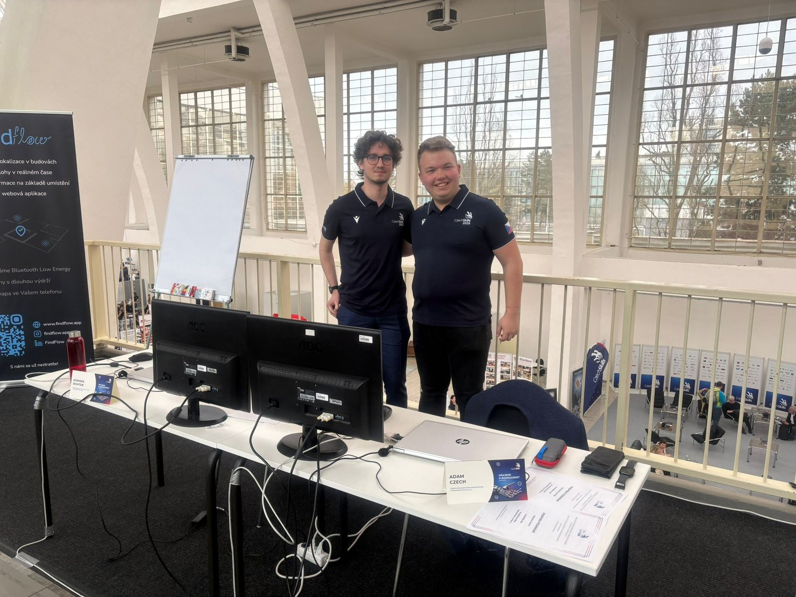
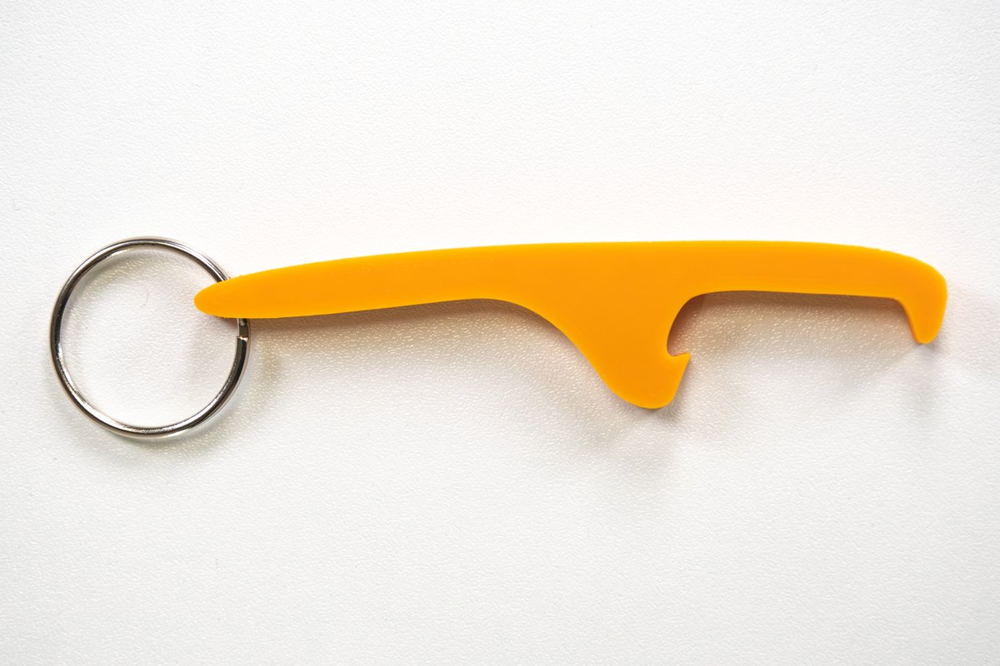
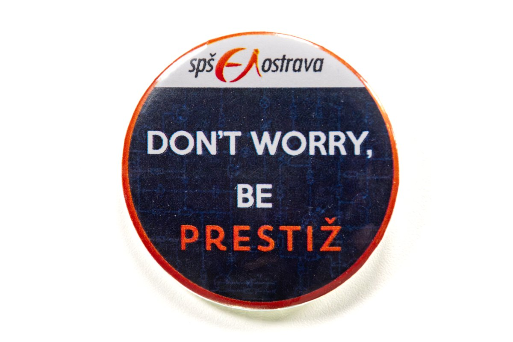
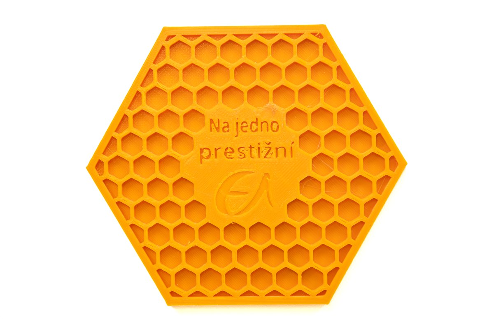
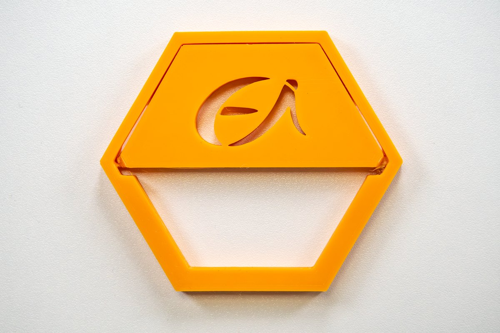
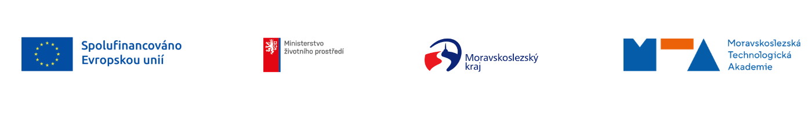

01 / ONLINE
Weby & systémy
Přehledné webové stránky a funkční rezervační systémy navržené podle vašich potřeb.
Studentská firma · založena 2023
Pomáháme dobrým nápadům dostat se do světa — online i v podobě věcí, na které si můžete sáhnout.
Od prvního návrhu až po hotový produkt.

Od digitálu po hmatatelné
Technologie a čistý design propojujeme v řešeních, která dávají smysl.
Přehledné webové stránky a funkční rezervační systémy navržené podle vašich potřeb.
Proměníme návrh ve věc. Tiskneme na 3D tiskárně a gravírujeme do dřeva.
Originální hrnky, placky a další reklamní předměty, které nesplynou s davem.
Malá ochutnávka
Každý projekt začíná nápadem. Tady je pár podob, které už dostal — a ta vaše může být další.




Ukázky z produktové kolekce Prestika. Konkrétní provedení přizpůsobíme domluvě.
Katalog produktů je k dispozici ke stažení.
Otvíráky · Podtácky · Placky · Přívěsky · Držáky telefonů · Mince · Motýlky · QR produkty · Hrnky a dárky
Náš příběh
Prestika je školní firma, ve které studenti zkoušejí podnikání v praxi — od výroby a marketingu po ekonomiku a účetnictví. Členové týmu se s novými ročníky mění, zaměření na technologie a reklamu zůstává.
Prestika zahájila činnost na SPŠ elektrotechniky a informatiky Ostrava v rámci projektu TPA. Jejím cílem bylo přenést výuku podnikání do skutečného provozu.
Výroční zpráva SPŠEI za rok 2023Dobová zpráva popisuje betaverzi aplikace VizEval pro hodnocení výuky. Studenti tehdy připravovali její pilotní ověření na třech krajských středních školách a nabízeli také weby a reklamní předměty.
Reportáž z března 2024Výroční zprávy školy ukazují růst výnosů z činnosti: z 77,9 tisíce Kč v roce 2024 na 115,1 tisíce Kč v roce 2025. Prestika tak pokračovala jako fungující školní firma, ne jen jako jednorázový projekt.
Výroční zpráva SPŠEI za rok 2024 Výroční zpráva SPŠEI za rok 2025Zpráva Moravskoslezské Technologické Akademie zachycuje studenty při řízení celého procesu: komunikují se zákazníky, navrhují a vyrábějí produkty a zajišťují jejich dodání. Při výrobě využívají 3D tisk, lisování i sublimaci.
Článek MTA z února 2026Fotogalerie
Kdo za tím stojí
Prestika je studentská firma, která vznikla v roce 2023 v rámci projektu TPA — Inovační centrum pro transformaci vzdělávání. Podnikání poznáváme přímo v praxi: od výroby a marketingu až po ekonomiku a účetnictví.
Studentské týmy se v průběhu času mění, ale naše zaměření zůstává: kvalitní služby v informačních technologiích a reklamě. Tvorbu webů a rezervačních systémů doplňujeme kreativním 3D tiskem a gravírováním.
Máte nápad? Ozvěte seInovační centrum pro transformaci vzdělávání · Registrační číslo CZ.10.03.01/00/22_003/0000072

Máte projekt v hlavě?
Rádi s vámi probereme web, výrobu na míru nebo reklamní předměty.
info@prestika.cz Instagram Kratochvílova 7 · 702 00 Moravská Ostrava a Přívoz